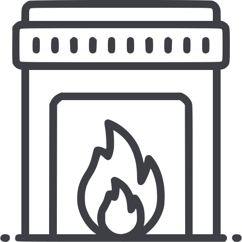
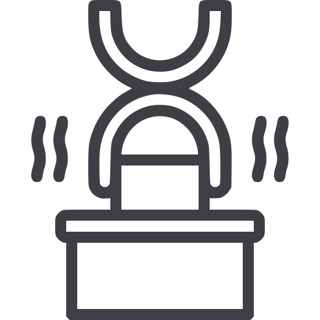
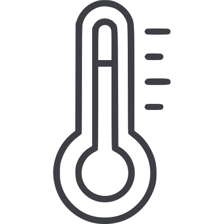
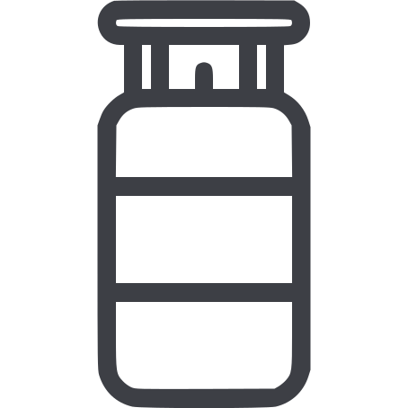
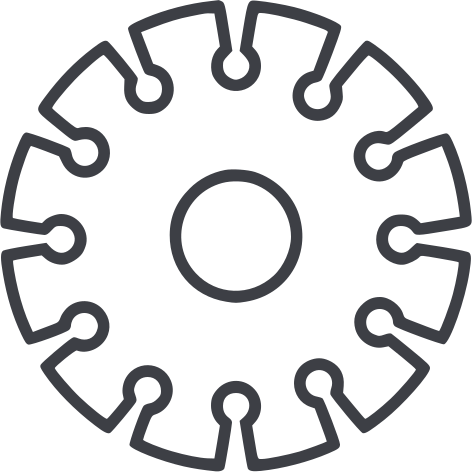
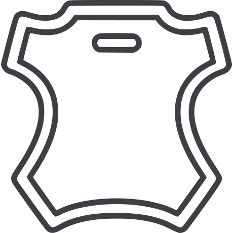
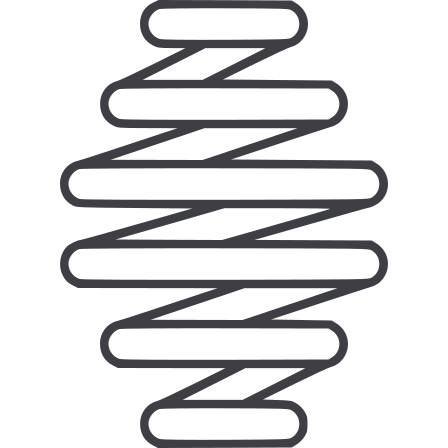

Product sheet · AI / HT / 01
Hardened and tempered spring steel strips
Steel strip that is heated above the critical transformation temperature for its grade, quenched, then tempered in an inert atmosphere to avoid oxidation. It arrives with its spring properties set, ready to blank or form.

Specification
- Thickness
- 0.10 to 4.00 mm
- Width
- 5 to 500 mm
- Finish
- Scaleless: grey, bright, blue. Polished: bright, blue, bronze, gold.
- Edges
- Slit, square or round
- Hardness
- Supplied in hardness ranges to suit your part
- Grades
- 14 carbon and alloy grades, cross-referenced to 8 standards
Grades: see the full chemistry and international equivalents on the grades page. Tell us which grade and standard your drawing calls for.
02Process
How the strip is hardened and tempered
- 01

Harden
The strip is heated above the critical transformation temperature for its grade.
- 02

Quench
It is cooled rapidly, which makes it fully hard.
- 03

Temper
It is reheated to a lower temperature and held there for a set time, trading a little hardness for toughness and spring.
- 04

Protect
All of this happens in an inert atmosphere, so the surface does not oxidise.
03Finish and edge
Seven finishes, three edges
Scaleless strip keeps the surface it comes out of tempering with. Polished strip is brought up bright, then left bright or coloured blue, bronze or gold.
- Scaleless grey
- Scaleless bright
- Scaleless blue
- Polished bright
- Polished blue
- Polished bronze
- Polished gold
- Slit edge
- The cut edge as it comes off the slitter
- Square edge
- The edge dressed square across the thickness
- Round edge
- The edge dressed to a rounded profile
04Applications
What our hardened and tempered strip becomes
Saw blades
Band saw, hand saw, cross cut saw and pit saw blades, and all types of wood cutting saws; circular saw blanks for the engineering industry.

Stone cutting
Gang saw blades for marble and stone cutting.
Automotive
Flat springs for clutch plates; shims and washers; auto electric contact springs; various components and springs.
Compressors and engineering
Valve plates and flapper valves for compressors; forging hammer belts; mould liners; bearing casings.
Textile and knitting machines
Knitting machine components; textile machine components.

Leather and foam
Leather band knives; foam band knives.

Tools, knives and springs
Masonry tools and agricultural tools; industrial knives; industrial springs and strip springs.
05Questions
Questions about hardened and tempered strip
Q01What is hardened and tempered steel strip?
It is carbon or alloy steel strip that has been heated above the critical transformation temperature for its grade, quenched to make it hard, then reheated to a lower temperature and held there (tempering) to give it toughness and spring properties. We harden and temper in an inert atmosphere to avoid oxidation. The strip arrives ready to blank or form into springs, blades and valve parts. Our range is 0.10 to 4.00 mm thick and 5 to 500 mm wide.
Q02What hardness can you supply?
Hardened and tempered strip can be supplied in different hardness ranges to suit your part. Tell us the hardness (HRC or HV) or the tensile range your drawing calls for and we will quote against it.
Q03What finishes and edges are available?
Hardened and tempered strip comes scaleless in grey, bright or blue, or polished in bright, blue, bronze or gold. Edges can be slit, square or round.
Q04What is the difference between cold rolled and hardened and tempered strip?
Cold rolled strip is hot rolled steel processed further in cold reduction mills at room temperature, followed by annealing and/or temper rolling. It gives a wide range of surface finishes and closer thickness tolerances, and it is usually hardened after the part is made. Hardened and tempered strip has already been quenched and tempered, so the part keeps its spring hardness straight off the press.
Request for quotation
Quote for hardened and tempered strip
Send the grade, thickness, width, finish, edge and quantity. We reply by email.
Or call +91 99999 07396